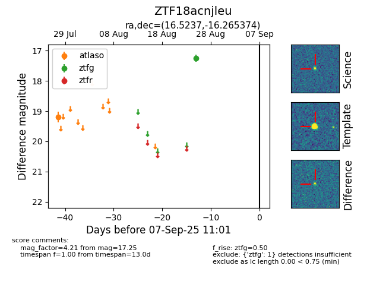

FINK: ZTF18acnjleu
Lasair: ZTF18acnjleu
ALeRCE: ZTF18acnjleu
ZTF18acnjleu (ztf,fink)
equatorial (ra, dec) = (16.5237,-16.26537)
galactic (l, b) = (141.0443,-78.61837)

last atlaso=19.20, ztfg=17.25
1 atlaso, 1 ztfg detections